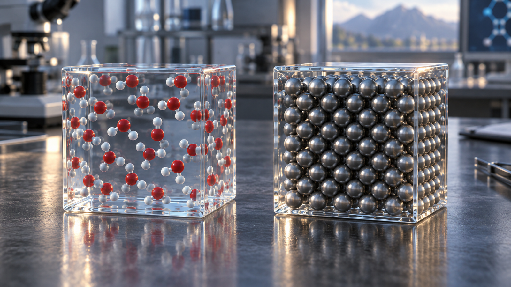
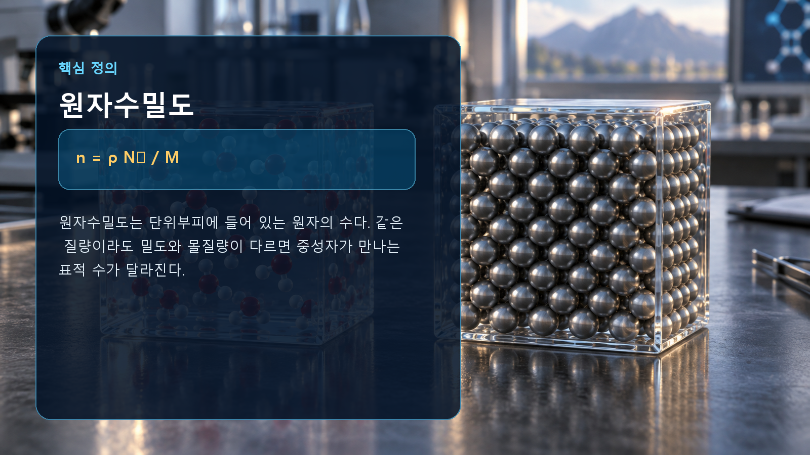

핵물리 기초 · 008
원자수밀도
단위부피 안의 표적 원자 수

핵심 개념
원자수밀도는 단위부피에 들어 있는 원자의 수다. 같은 질량이라도 밀도와 몰질량이 다르면 중성자가 만나는 표적 수가 달라진다.
원자수밀도의 기본 원리
원자수밀도는 단위부피에 들어 있는 원자의 수다. 같은 질량이라도 밀도와 몰질량이 다르면 중성자가 만나는 표적 수가 달라진다. 관련 값을 계산할 때에는 단위와 계의 경계를 먼저 정해야 하며, 평균적인 설명과 개별 핵종의 실제 자료를 구분해야 합니다.

관계식과 계산 예시
n = ρ Nₐ / M가 핵심 관계입니다. 밀도 19.1 g/cm³인 우라늄 금속은 대략 4.9×10²² atoms/cm³ 수준이다. 계산에서는 입력값의 단위를 일관되게 맞추고, 근삿값이 적용되는 범위를 확인해야 합니다.
원자력공학에서의 활용
거시적 단면적, 평균자유행로와 원자로 반응률 계산의 출발점이다. 이 개념 하나만으로 실제 계통을 모두 설명할 수는 없으므로, 평가 목적에 맞는 핵자료와 재료조건, 에너지 범위 및 불확실성을 함께 적용해야 합니다.
해석에서 주의할 점
그림은 이해를 위한 개념 표현이며 입자 크기와 거리, 시간척도를 실제 비율로 그린 것이 아닙니다. 관계식은 대표적인 형태이므로 정밀 해석에서는 핵종별 평가핵자료와 보존법칙, 실험조건을 우선합니다.